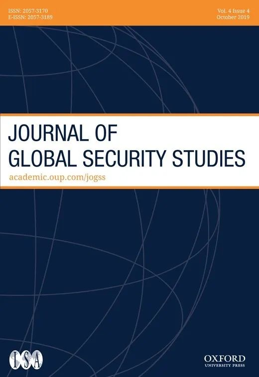
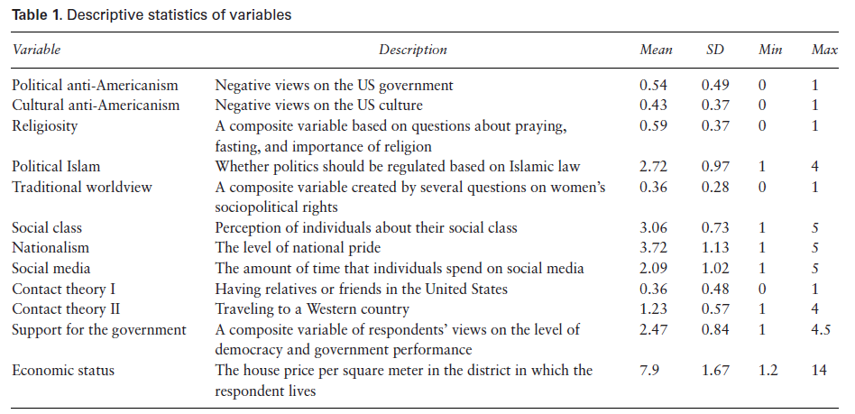
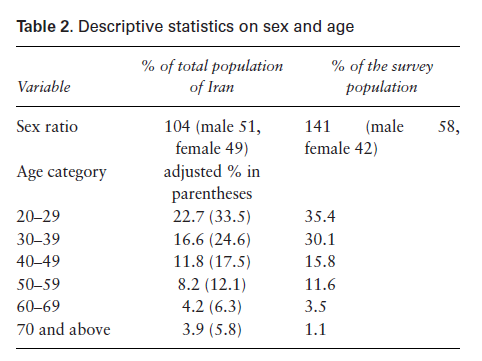
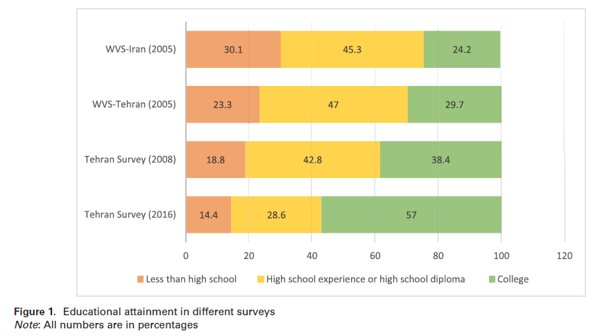
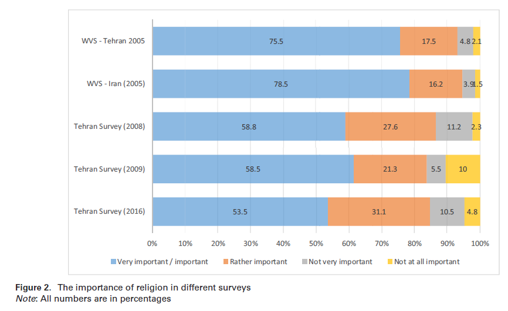
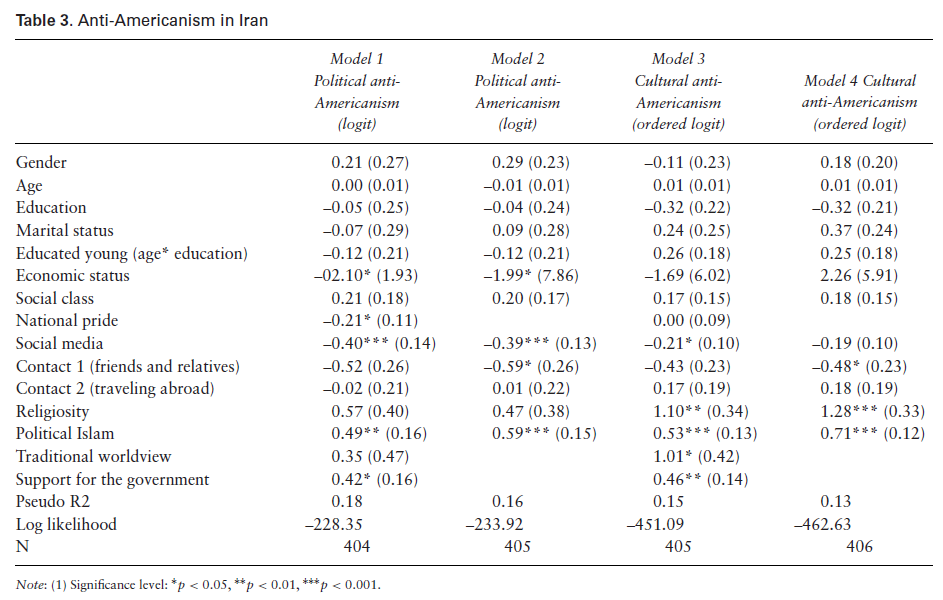
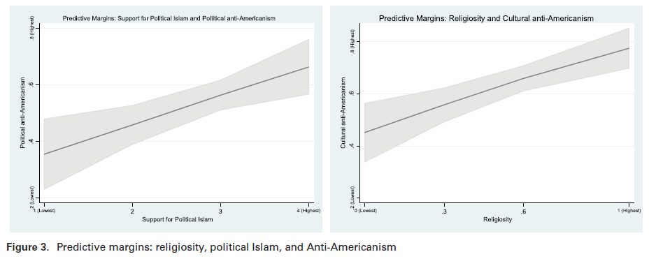

收录于合集

作品简介
【作者】 Peyman Asadzade，亚利桑那州立大学博士候选人
【编译】 朱文菡（国政学人编译员，外交学院）
【校对】 阮含含 杨帆
【审核】 丁伟航
【排版】 李晓暖
【美编 】黄竹音
【来源】 Asadzade, Peyman. 2019. “Faith or Ideology? Religiosity, Political Islam, and Anti-Americanism in Iran.” Journal of Global Security Studies 4 (4): 545–59. https://doi.org/10.1093/jogss/ogy038
期刊简介

《全球安全研究杂志》（JoGSS）旨在发表全球安全研究领域的前沿研究，关注传统和非传统安全问题，特别致力于鼓励本领域的跨部分和跨地区对话。
信仰还是意识形态？
伊朗的宗教狂热、政治伊斯兰和反美主义
Faith or Ideology?
Religiosity, Political Islam, and Anti-Americanism in Iran
Peyman Asadzade
内容提要
中东地区尤其是伊朗作为反美主义的桥头堡而声名鹊起。为什么有的人对美国的敌对情绪会比其他人更强烈？哪些因素与反美情绪有关？本文是首个针对伊朗反美主义的系统性研究，该国自1979年革命起就将反美主义作为政府的指导性政策。基于从2016年开始的原始调查数据，本文旨在解释宗教狂热和政治伊斯兰是如何影响伊朗民众对美国的态度的。通过区分政治反美主义和文化反美主义，本文发现支持政治伊斯兰与两种反美主义都显著相关，而宗教狂热只与文化反美主义显著相关。这一发现挑战了将穆斯林世界的宗教狂热与反美情绪联系起来的文献。
文章导读
1.
引言
美国在二战后作为超级大国的崛起和软实力与硬实力的扩张在各国引起不同反应。 反美主义，即一种针对美国文化、社会或外交政策的反感厌恶或强烈敌意的思维模式，在文化、地缘、经济和社会发展水平各异的国家或多或少都有体现。 本文专注于研究伊朗的反美主义，这个国家致力于在中东地区推动反美思想和运动。从1941年到1979年，在巴列维国王统治下的伊朗原本是美国在该地区的坚定盟友。然而，1979年革命不仅使美国失去了一个盟友，更多了一个敌人。革命领袖霍梅尼称美国为“大撒旦”，自此反美主义成为伊朗的核心政策。尽管如此，外界对于伊朗民众的实际反美程度缺少准确认知。因此本文旨在解决这一问题，关注宗教对于政治态度的影响，尤其是厘清宗教狂热、政治伊斯兰与反美主义间的关系。
本文基于作者的私人资源和2016年在德黑兰对460名受访者的原始问卷调查结果。文章第一部分关注现有文献对反美主义的定义，并将其划分为政治反美主义（针对美国政府）和文化反美主义（针对美国流行文化）。第二部分提出了关于宗教狂热、政治伊斯兰与反美主义间关系的两个假设。第三部分讨论了数据收集和采样方法。最后使用描述性统计和推论性统计对数据进行检验分析。
1.1
反美主义的类型
在不同语境下，学者们对反美主义的类型界定各异。有的认为反美情绪是基于美国政策的反应，比如支持以色列或入侵伊拉克。有的认为是文化上的，西方文化对传统穆斯林社会形成了冲击，比如美国社会的自私、粗俗和贪婪，以及作为主流的西方生活方式与科技对穆斯林传统价值和身份认同的蚕食。基于此，作者将这些区分为 政治反美主义和文化反美主义 ，但强调二者并非是非此即彼的，不同类型的反美主义可能以不同的方式影响个人的政治态度和行为。伊朗统治者们对于这两种反美主义言辞都有使用，比如霍梅尼就曾警告西方的“文化北约”对伊朗的伊斯兰身份认同是非常危险的。另一方面，伊朗统治者们也强调现下的反美情绪是对美国政策的反应，敌视美国并非针对美国人而是美国政府的政策和傲慢态度。
本文虽然会分析哪种类型的人更倾向于哪种反美主义，但这依然是因人而异的，有的人可能两种都有，有的人可能只有一种，并且有的人可能反感美国社会的某些方面同时又认可另一些方面。
1.2
宗教狂热、政治伊斯兰和反美主义
Bernard Lewis在其1990年所著《穆斯林愤怒的根源》一文中指出穆斯林的宗教狂热是构成反美主义的关键因素。Huntington的《文明的冲突与世界秩序的重建》也认可这种关于伊斯兰信仰的本质主义观念，认为信仰影响了穆斯林对西方尤其是对美国的看法。Blayeds和Linzer的研究更进一步使用实证方法指出穆斯林世界的宗教狂热与反美主义呈显著相关，但他们没有提出理论解释。一种可能的解释是虔诚的穆斯林认为美国的文化霸权使其宗教信仰岌岌可危，反美主义反映了个人对于现代性的不适，他们将以美国为代表的现代世俗生活视为对其传统生活方式的威胁，比如道德败坏、家庭结构瓦解、妇女商品化（commodification of women）以及破坏性的消费主义。他们认为西方文化与其传统生活方式是不兼容的。由此，本文提出了第一个假设： 宗教狂热与文化反美主义显著相关。
但是虔诚的穆斯林不一定是政治伊斯兰的支持者。个人的宗教虔诚体现在日常生活中的宗教实践，并不必然与政治相关。另一方面，对于政治伊斯兰的支持者而言，伊斯兰就不仅仅是一个宗教了，而是一套完整的社会政治系统指南，政治是伊斯兰主义不可分割的一部分。美国卷入穆斯林世界是对伊斯兰激进分子的号召。无论逊尼派还是什叶派都有各自的反美平台。霍梅尼在文化反美和政治反美上兼而有之，他认为美国政府是所有宗教包括基督教的敌人，不在乎美国人民的利益，只在乎政府的利益，并且美国政府在本质上就是对伊斯兰充满敌意的。通常来说，伊斯兰主义者对于美国的文化霸权和政府政策都持悲观态度。由此，本文提出第二个假设： 支持政治伊斯兰与政治反美主义和文化反美主义都有显著相关性。
2.
数据和方法
本文基于 2016年在德黑兰应用系统抽样法开展的原始问卷调查 。作者从德黑兰376个社区中抽取了40个社区的中心地带进行调查。调查由一群有调查经验的社科学生通过波斯语面对面访谈进行。问卷有效回收率为82%。基于伊朗家庭结构，调查分别在早晚展开以便收集尽可能均衡的男女样本；由于2009年数据显示德黑兰有37%的异乡居民，本文的异乡受访者比例也达到了24%。由此尽可能保证了样本的多样性。
3.
因变量和自变量
本调查的 因变量为政治反美主义和文化反美主义 。每个变量都设计了相应问题。关于政治反美主义，作者将受访者对美国政府持负面态度记为1，反之记为0。对于美国政府的态度主要基于其对美国政策的态度进行判断。关于文化反美主义，主要基于三个问题，即其对伊朗文化的态度，以及美国电影和音乐是否伤害伊朗文化，其克朗巴哈系数为0.71。
本调查的 自变量为宗教狂热和政治伊斯兰 。关于宗教狂热，作者设计了三个有关宗教在其生活中重要性和其宗教实践的问题，克朗巴哈系数为0.74，信度较高。关于政治伊斯兰，作者问题基于受访者对伊朗国内伊斯兰教法的态度，按支持度从高到低分为4、3、2、1。
4.
控制变量
本调查的控制变量为其他可能影响调查结果的因素，除了人口统计学特征外，还包括社会阶层、政治观念、与外部世界的关系和对社会事件的看法。
民族主义是一个影响反美主义的潜在因素。民族主义者批评美国无视国际法、不尊重他国体制，只顾追求美国战略利益。因此可以合理推测 具有高度民族自豪感的受访者会对美国霸权有更高的敌意 。作者将民族自豪感设置为代理变量来考察受访者的民族主义倾向。尽管民族主义与民族自豪感实际不同，即前者是排外的而后者非也，但在没有更好测量方式的情况下，民族自豪感仍然是民族主义的一个合理指标。
第二个控制变量是传统世界观。这一传统世界观主要关注妇女在家庭和社会中的角色，作者将其设计为一个信度达0.76 的复合变量。
此外，教育、年龄、对外国态度、是否有亲友在美国或是否去过西方国家旅游、社交媒体使用程度、经济状况等也都被纳入控制变量。
表一展示了自变量、因变量和控制变量的平均值、标准差、最大值和最小值。

4.1
数据分析
本节通过对当前数据与其他学者和机构近年来制作的数据集进行比较和回归分析，来进行描述性和推论性统计。
表二展示了受访者的性别和年龄分布。调查的男性人数超过女性，占受访者的58%。当调查员要求采访一个家庭的成员时，男性更可能自愿受访，因为女性与陌生人交谈被认为是不合适的，尤其是在保守的家庭中。年龄分布表明样本比伊朗人口整体结构年轻。不过当删除19岁以下人口并将其调整为调查样本时，百分比与本次调查人口的比例更接近。

伊朗的人口教育数据是不公开的，图一展示的是2005年的世界价值观调查（WVS）、其他学者2008年的调查与作者2016年调查数据的对比。调查显示，自2005年起，伊朗人的高中学位教育下降而大学学位教育上升，但需要注意的是德黑兰本身拥有全伊朗最好的高等教育机构。

图二比较了本次调查与此前三次调查针对宗教重要性的数据。调查显示，自2005年起，认为宗教重要或非常重要的人口比例呈下降趋势。从2005年到2016年，宗教狂热整体呈下降趋势。但同样需要考虑到调查地点在德黑兰，城市人口和受教育人口比例高于伊朗整体水平。

作者2016年的数据与此前调查呈现出一致性。值得说明的是，作者并不认为受访者出于政体封闭的原因而掩盖了自己对宗教狂热、政治伊斯兰和反美主义的真实态度。 其一是因为伊朗的伊斯兰政体本身兼具民主和威权特质，允许一定程度的政治竞争也就相应地使伊朗公民具有一定的表达自由；其二是因为2016年的调查是在鲁哈尼任总统后，鲁哈尼任期不仅推动了言论和集会自由，还由于与奥巴马通话和伊核协议的达成而强化了民众表达真实偏好的意图。
在进行回归分析前，还有必要指出政治反美主义和文化反美主义在实证上的不同。二者的相关系数是0.44，说明二者呈现正相关但相对较低的相关性。同时，宗教狂热和政治伊斯兰的相关系数是0.60，说明二者呈现正相关但并不算强的相关性。
作者使用logistic和有序logistic回归模型来检验假设（见表三）。鉴于政治反美主义是二元变量，logistic模型可用于识别其预测变量。鉴于文化反美主义是定序变量，使用有序probit 模型来预测。模型1和模型3分别呈现了政治反美主义和文化反美主义的结果。鉴于宗教与变量（如民族自豪感、对政府的支持以及传统世界观）之间存在多重共线性的可能性，作者在使用模型 2 和模型 4 时没有包括这些变量，以查看在没有这些变量的情况下，结果是否一致。

如表三所示， 在所有四种模型中，政治伊斯兰都与反美主义呈显著相关。 这一发现表明，支持政治伊斯兰与反美主义之间存在有意义的联系。对现政府的支持也是政治和文化方面反美态度的一个强有力的预测变量。这表明，伊朗的反美主义与国内政治密切相关。支持政府的个人也更有可能支持这两种反美主义。
然而， 宗教狂热与文化反美主义显著相关，但与政治反美主义没有显著相关性。 这一发现支持了个人的信仰虔诚与文化反美态度有关的观点。宗教与政治反美主义之间的关系是正相关的，但并不具有统计学意义。
社交媒体也是模型 1 、2 和 3 中反美态度的重要预测变量。负系数表明， 从多元渠道获取信息的个人不太可能持反美态度。 经济状况与政治反美主义的关系是负相关的，具有统计学意义。这表明，经济地位较低的个人更有可能采取政治反美态度。这可能源于伊朗的分配政治（distributive politics）。事实上，许多低收入家庭都依赖政府的财政援助，这可能会促使他们接受伊朗政府对美国政府的负面看法。
尽管系数为负，民族自豪感与政治反美主义也显著相关。这表明， 较高的民族自豪感与较低的反美态度有关。 虽然这一发现有悖常理，但不应让人感到意外。民族主义不一定与反西方特别是反美的态度有关。特别地，伊朗统治者们将民族主义视为西方的舶来品，宣扬泛伊斯兰主义。伊朗在后革命时代，民族主义和伊斯兰意识形态形成了鲜明对立。因此，尽管世俗民族主义者会拒绝西方对伊朗的任何形式的统治，但他们远没有表现出对西方特别是美国的敌意。
传统世界观与文化反美主义呈显著负相关，但与政治反美主义没有显著相关性。 传统世界观与文化反美主义之间具有有意义的关系，这支持了这样一种观点，即对性别平等主义持负面看法的人更可能鄙视美国文化。这与先前2009年研究者关于传统世界观对反美态度的影响的调查结果是一致的。
最后，年龄与教育之间的相互作用没有显示出与因变量的统计学显著性关系。因此，关于受过良好教育的青年中产阶级对反美情绪的抑制作用的争论需要重新考虑。
图三展示了基于支持政治伊斯兰和宗教狂热的政治反美主义和文化反美主义的拟合边际（predictive margins）。不支持政治伊斯兰的个人表现出较低的反美态度。更确切地说，在支持政治伊斯兰程度最低的个人中，持反美态度的概率不到0.40。随着对政治伊斯兰的支持增加，持反美态度的概率增至0.70。宗教狂热对文化反美主义也有类似的影响。在宗教狂热程度最低的人群中持反美态度的概率是0.40，在宗教狂热程度最高的人群中这一概率增加到了0.80。

5.
结论
本研究表明相较于宗教狂热，政治伊斯兰与反美主义的相关性更强。宗教狂热主要导致文化反美主义，而政治伊斯兰则是政治反美主义与文化反美主义兼而有之。这与Keohane和Katzenstein在2007年得出的关于政治伊斯兰和反美主义的结论一致，即伊斯兰主义整体上对美国持负面态度。虽然伊朗伊斯兰政府自建立以来就是反美桥头堡，但虔诚的伊朗民众并不是特别买账。本研究显示只有55%的受访者对美国政府持负面态度，48%的受访者对美国文化持负面态度，媒体报道的焚烧美国国旗等激进行为并没有准确反映伊朗社会的现实。
此外，所有穆斯林都持反美态度的观点不仅在战略上是无效的，在实证上也是错误的。虔诚的穆斯林并不必然支持政治伊斯兰。
本研究也存在 两个局限 。第一，本研究不能代表整个穆斯林世界，即使在伊朗内部也存在诸多差异，更遑论伊朗之外了。第二，政治伊斯兰与反美主义虽然具有统计学上的相关性，但不代表二者具有因果联系，二者间关系有待进一步探索。
译者评述
继年初苏莱马尼被刺、本月伊朗客机遭美军机袭扰后，近日黎巴嫩真主党又与以色列发生边境摩擦，美伊关系正陷入1979年人质事件后的新一轮紧张状态。本文调查期间正值鲁哈尼与奥巴马政府达成伊核协议之际，而今情势急转直下，伊核协议在特朗普政府的步步紧逼下已濒临破产。
本文聚焦伊朗民众对美真实态度，一方面通过实证数据表明仅半数受访者持反美态度，另一方面剖析了两种反美主义及其影响因子。正如作者所强调的那样，调查仅在德黑兰进行，不具有代表性。作为实证研究，作者虽然检验了其问卷设计中问题的信度，但整体问题数量仍然较少（30个），问题与其所试图反应的研究维度之间缺少更为严谨的设计和说明。
本文在以下两个问题上缺少进一步说明。
一是关于宗教态度是否对民众层面的政治偏好具有本质影响。作者仅指出宗教狂热与政治伊斯兰之间的相关系数是0.60，没有继续探究其穆斯林身份与持政治伊斯兰信念之间的关系。对于具有真主主权观念的穆斯林民众而言，理想的生活方式是建立在被称之为“乌玛”的社群组织之上的，而接受教法统治就是“乌玛”的内含之义。更进一步地，本文在探讨“文化反美主义”时没有就西方式的生活方式是否覆盖了包含科技在内的所谓“现代生活”作出明确界定，而这一点之所以重要是因为在穆斯林群体适应现代化的讨论中存在伊斯兰与现代性互斥和二者可以兼容的两种观念，而这两种观念的不同可能影响其对政治伊斯兰诉求和手段的理解。引领1979年革命的大阿亚图拉霍梅尼强调政治参与，而同时期的另一位大阿亚图拉西斯塔尼则对政治表现得相对“冷漠”，或许也与他们对政治伊斯兰的理解不同有关。
二是关于控制变量民族主义与宗教对受访者观念影响的优先顺序。就伊朗民众的反美态度而言，民族主义是一个不亚于宗教的影响因素。与建立在后殖民历史上的诸多西亚北非国家不同，历史悠久的波斯文明有其独立于伊斯兰教也能唤起民族自豪感的自身价值。因此，伊朗民众的反美态度更多是出于伊斯兰主义还是民族主义就是一个值得深究的问题。伊朗的民族主义复杂性在于，除去波斯文明外，1979年革命及其后伊朗伊斯兰共和国的建立本身伴随着反美思想和行动。作者在文中也指出了具有泛伊斯兰思想的伊朗统治者不同于民族主义者，事实上这也能部分解释其“输出革命”、建立什叶派新月带的行为。更进一步地，从制度民族主义（civic nationalism）的逻辑来说，作为政治伊斯兰践行者的伊朗政府宣扬其制度优越性本身即是现代伊朗民族身份构建的应有之义。
基辛格在《世界秩序》中也提出了革命前后美伊关系的转变是出于心理还是战略、矛盾能否通过政策调和以及美伊关系的未来是战是和等一系列问题。当他指出伊朗必须在民族国家秩序内外做出选择时，也反映出在华盛顿精英眼中双方所坚持的道路是有本质区别的。作为“阿拉伯之春”的实际获利方，伊朗与美国在西亚北非地区的争夺或许才刚刚开始，双方持续四十年的相互敌视既是意识形态的，也是地缘政治的。本文所试图传达的具有矛盾调和色彩的统计结论，虽然有助于正视双方民众的真实态度，但对于美伊关系的真正缓和而言眼前仍是漫漫长路。

文章观点不代表本平台观点，本平台评译分享的文章均出于专业学习之用, 不以任何盈利为目的，内容主要呈现对原文的介绍，原文内容请通过各高校购买的数据库自行下载

添加 “国小政”微信，获取最新资讯


好好学习，天天“在看”

国政学人
支持学术公益与知识传播
微信扫一扫赞赏作者 __赞赏
已喜欢，对作者说句悄悄话
取消 __
发送给作者
发送
最多40字，当前共字
上一页 1/3 下一页
长按二维码向我转账
支持学术公益与知识传播
受苹果公司新规定影响，微信 iOS 版的赞赏功能被关闭，可通过二维码转账支持公众号。